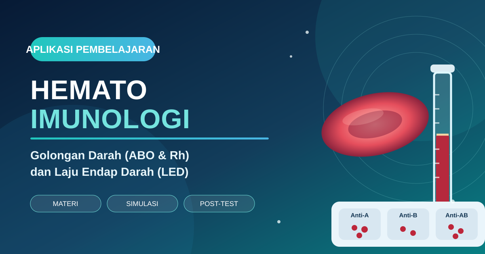

🩸
Blood Grouping
Kenali antigen A dan B, antibodi spesifik, reaksi aglutinasi, serta pola interpretasi ABO.
Jelajahi prinsip reaksi antigen–antibodi, identifikasi golongan darah ABO dan Rhesus, serta pengukuran Laju Endap Darah (LED) melalui materi terstruktur, simulasi, dan post-test interaktif.

Pilih jalur belajar dan kuasai konsep penting sebelum meninggalkan laboratorium.
Kenali antigen A dan B, antibodi spesifik, reaksi aglutinasi, serta pola interpretasi ABO.
Pahami antigen D dan relevansi inkompatibilitas Rhesus dalam kehamilan dan transfusi.
Pelajari sedimentasi eritrosit, prinsip Westergren, faktor yang memengaruhi hasil, dan interpretasinya.
Materi dirancang mengikuti urutan praktikum.
Ringkasan konsep berdasarkan Penuntun Praktikum Biokimia Biomedik 3, bagian Hematoimunologi (hlm. 18–25).
Antigen merupakan molekul atau senyawa yang dapat dikenali secara spesifik oleh antibodi. Bagian antigen yang dikenali disebut epitope (determinan antigenik), sedangkan bagian antibodi yang berikatan dengannya disebut paratope. Antibodi atau imunoglobulin diproduksi oleh sel plasma yang berasal dari limfosit B.
Dalam pemeriksaan golongan darah ABO, antigen (aglutinogen) berada pada permukaan eritrosit. Reagen Anti-A, Anti-B, dan Anti-AB bertindak sebagai antibodi yang mengenali antigen yang sesuai. Ikatan antigen–antibodi dapat menghasilkan aglutinasi, yaitu penggumpalan eritrosit yang dapat diamati secara visual.
Penentuan golongan darah pada praktikum dilakukan dengan mencampurkan darah kapiler dengan reagen Anti-A, Anti-B, dan Anti-AB pada area terpisah di objek gelas. Pola aglutinasi digunakan untuk menentukan keberadaan antigen A dan/atau B.
| Golongan | Antigen eritrosit | Antibodi alami dalam plasma | Anti-A | Anti-B | Anti-AB |
|---|---|---|---|---|---|
| A | A | Anti-B | Positif | Negatif | Positif |
| B | B | Anti-A | Negatif | Positif | Positif |
| AB | A dan B | Tidak memiliki anti-A/anti-B | Positif | Positif | Positif |
| O | Tidak memiliki A/B | Anti-A dan Anti-B | Negatif | Negatif | Negatif |
Catatan interpretasi: pola tabel merupakan pola reaksi pemeriksaan forward grouping menggunakan eritrosit dan reagen yang sesuai. Penentuan golongan darah untuk keperluan transfusi klinis memerlukan pemeriksaan lanjutan sesuai prosedur layanan transfusi, termasuk konfirmasi dan uji kompatibilitas.
Sistem Rhesus terutama berkaitan dengan keberadaan antigen D pada permukaan eritrosit. Individu dengan antigen D dikategorikan Rh positif, sedangkan individu tanpa antigen D dikategorikan Rh negatif. Penentuan Rh dilakukan menggunakan reagen Anti-D; reagen Anti-D tidak termasuk dalam tiga reagen ABO yang digunakan pada simulasi di aplikasi ini.
Inkompatibilitas Rh dapat relevan ketika ibu Rh-negatif mengandung janin Rh-positif. Paparan eritrosit janin dapat memicu pembentukan antibodi maternal anti-D. Pada kehamilan berikutnya, antibodi tersebut dapat melintasi plasenta dan menyebabkan hemolisis eritrosit janin/neonatus (hemolytic disease of the fetus and newborn).
LED adalah pemeriksaan yang mengukur kecepatan pengendapan eritrosit dalam sampel darah berantikoagulan selama periode satu jam. Hasil dinyatakan dalam mm/jam dan dibaca sebagai tinggi kolom plasma jernih di atas eritrosit yang telah mengendap.
Pengendapan berlangsung melalui tiga tahap utama: (1) pembentukan rouleaux, yaitu eritrosit berkumpul membentuk susunan seperti tumpukan koin; (2) sedimentasi, yaitu agregat eritrosit bergerak turun; dan (3) pemadatan, yaitu eritrosit terkumpul di bagian bawah tabung.
LED dapat meningkat pada infeksi, inflamasi, kerusakan jaringan, kehamilan, menstruasi, dan usia lanjut. Pemeriksaan ini dapat membantu pemantauan perjalanan penyakit atau respons terapi, tetapi bersifat nonspesifik sehingga tidak dapat digunakan sendiri untuk menegakkan diagnosis.
Pilih pola aglutinasi untuk mempelajari interpretasi hasil pemeriksaan ABO.
Pilih sampel untuk melihat pola reaksi.
Pola reaksi aglutinasi akan ditampilkan di sini.
Prinsip, prosedur Westergren, faktor teknis, dan interpretasi hasil.
Darah vena yang telah diberi antikoagulan dibiarkan mengendap selama satu jam. Kecepatan sedimentasi dinilai dari tinggi lapisan plasma jernih yang terbentuk di atas eritrosit yang mengendap. Semakin tinggi kolom plasma setelah satu jam, semakin besar nilai LED.
Eritrosit saling berdekatan membentuk agregat seperti tumpukan koin.
Agregat eritrosit bergerak turun melalui kolom darah.
Eritrosit terkumpul dan memadat di dasar tabung.
| Metode / kelompok | Laki-laki | Perempuan |
|---|---|---|
| Westergren (bagian prosedur praktikum) | 0–10 mm/jam | 0–15 mm/jam |
| Wintrobe (bagian standar LED) | 0–10 mm/jam | 0–20 mm/jam |
Penuntun juga mencantumkan variasi nilai rujukan Westergren menurut usia pada bagian teori: pria kurang dari 50 tahun kurang dari 15 mm/jam dan lebih dari 50 tahun kurang dari 20 mm/jam; wanita kurang dari 50 tahun kurang dari 20 mm/jam dan lebih dari 50 tahun kurang dari 30 mm/jam. Nilai rujukan dapat berbeda menurut metode dan populasi; gunakan acuan yang ditetapkan laboratorium pengajar saat menilai hasil praktikum.
Masukkan tinggi kolom plasma jernih yang terbaca setelah satu jam. Simulasi ini membantu menghubungkan pembacaan tabung dengan satuan hasil.
Interpretasi simulasi menggunakan nilai rujukan praktikum Westergren yang tercantum di bagian prosedur penuntun: laki-laki 0–10 dan perempuan 0–15 mm/jam. Pilih kelompok untuk konteks pembelajaran.
10 soal Benar–Salah setelah praktikum golongan darah dan LED.
Jawab seluruh pernyataan berdasarkan prinsip pemeriksaan, interpretasi reaksi aglutinasi, dan prosedur LED. Setiap soal dilengkapi pembahasan setelah tes selesai.
Tidak memerlukan login. Pilihan jawaban dinilai setelah tombol selesai ditekan.
Hematology & Immunology Learning Lab merupakan media pembelajaran interaktif untuk mendukung praktikum Biokimia Biomedik 3, topik Hematoimunologi. Cakupan materi mengikuti bagian Hematoimunologi pada Penuntun Praktikum Biokimia Biomedik 3 Tahun Akademik 2026–2027, terutama pemeriksaan golongan darah dan laju endap darah.
Penuntun Praktikum Biokimia Biomedik 3 Tahun Akademik 2026–2027. Bagian Hematoimunologi, hlm. 18–25. Materi ringkas aplikasi ini diturunkan dari cakupan dan prosedur yang dicantumkan dalam penuntun tersebut.